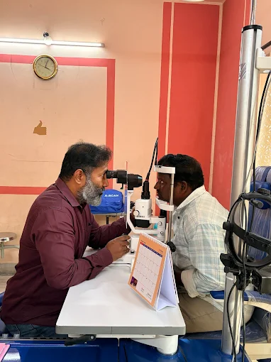
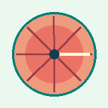
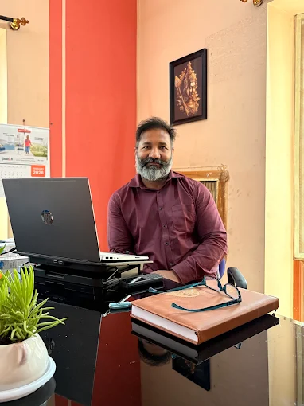
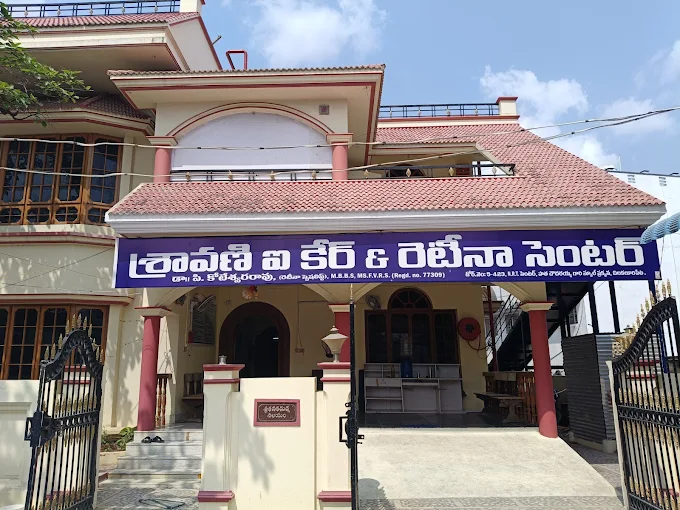
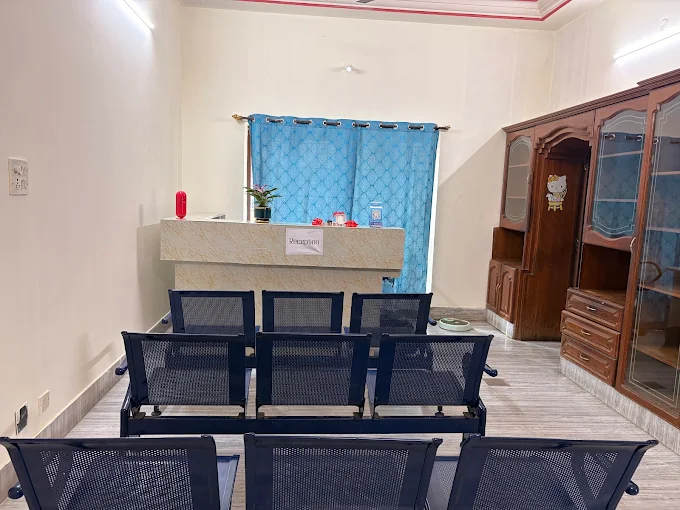
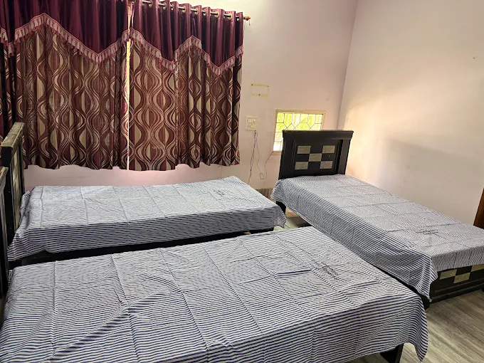
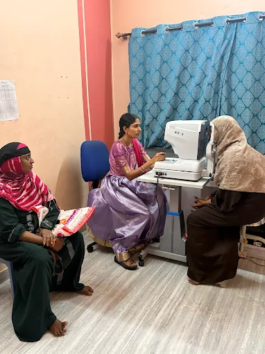
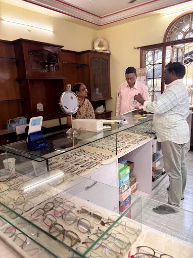

Retina & diabetic eye care
Evaluation and treatment for diabetic retinopathy, retinal tears, flashes, floaters and detachment.
Explore retina care →Advanced retina and complete eye care in Chilakaluripet. Thoughtful diagnosis and treatment with Dr. P. Koteswararao, MBBS, MS, FVRS.


Retina expertise
MBBS, MS (Ophthalmology), FVRS
Dr. Koteswararao is an ophthalmologist and fellowship-trained vitreoretinal surgeon. After his master’s degree in ophthalmology, he pursued specialized fellowship training in vitreoretinal surgery.
His clinical interests include complex retinal conditions, diabetic eye disease, retinal tears and detachment, and eye concerns in infants. He makes time to explain findings and care options so patients understand each step.
From urgent retinal concerns to routine checkups, find the right care in one welcoming clinic.
Evaluation and treatment for diabetic retinopathy, retinal tears, flashes, floaters and detachment.
Explore retina care →Comprehensive exams, glaucoma monitoring and micro-incision cataract surgery options.
Explore eye care →Gentle vision assessments, squint and lazy eye care, and ROP screening for premature babies.
Explore child eye care →Clear explanations, appropriate testing and a plan shaped around your eye health and needs.
Meet with Dr. P. Koteswararao for a careful examination and time to discuss your concerns.
Modern testing helps your doctor understand your eye health and guide decisions.
Your doctor will explain suitable medical, laser or surgical options after assessment.
Follow-up visits help your care team review healing and answer questions after treatment.
Regular check-ups can help identify changes early and keep your eye health on track.
Modern diagnostic resources and thoughtful support at each step of your eye care.
Specialist surgical care supported by modern ophthalmic technology. Your doctor will discuss the procedure and where it will take place.
Eye examinations and diagnostic imaging help your doctor assess your vision and eye health.
Practical post-treatment guidance and follow-up visits to review healing and answer your questions.
Sudden flashes, many new floaters or a shadow across vision need prompt assessment. Call us for guidance during clinic hours.
The principles and services that reflect our commitment to eye care.
Retina, cataract, glaucoma and family eye care supported by thoughtful examinations and modern diagnostic imaging.
Learn about cataract evaluation, micro-incision surgery and lens options with your ophthalmologist.
Assessment and treatment planning for diabetic retinopathy, retinal tears, floaters and detachment.
Eye pressure and optic nerve checks help your doctor monitor glaucoma and discuss care options.
Gentle vision assessments, newborn retinal screening and care for squint or amblyopia.
Routine and comprehensive exams assess your vision and eye health, with further testing when needed.
Sudden flashes, many new floaters, a curtain or an eye injury need prompt medical advice.
Dr. P. Koteswararao brings focused retinal training and clear, reassuring communication to every consultation.
Choose the concern that sounds familiar. This guide can help you decide what to ask about at your visit.
Blurred patches, dark floaters or vision that changes over time are reasons to arrange a dilated retinal evaluation.
Glare, halos around lights and faded colors can be associated with cataracts. An eye exam helps identify the cause.
Premature babies and children with unusual tracking, persistent watering or a white pupil reflection should be assessed promptly.
ROP screening for babies born early or with low birth weight, and assessment for squint or amblyopia (lazy eye). Follow the timing advised by your neonatologist or eye specialist.
A few simple preparations can make your visit easier.
Bring your glasses and reports
Bring your current glasses, prescription cards, recent diabetes or blood pressure reports, and a list of medicines you take.
Ask about contact lenses
If you wear contacts, call the clinic to ask whether they should be removed before the exam.
Plan for a dilated exam
Drops may take 20–30 minutes to work. Blurred vision and light sensitivity can last 3–5 hours.
Arrange a ride
Bring a family member or friend to drive you home after dilation. Do not drive yourself.
Your doctor will explain the recommended procedure and where it will take place during your consultation.
The clinic accepts cash, UPI payments such as Google Pay, PhonePe and Paytm, and major debit or credit cards.
Allow around 1.5 to 2 hours, including time for dilation and diagnostic imaging. Timing may vary.
Call the clinic promptly for guidance. Sudden flashes, a shower of floaters or a shadow across vision need urgent assessment.
A quick look at Sravani Eye Care & Retina Center spaces and equipment.






Share your details and we’ll prepare a WhatsApp message for the clinic team to arrange a callback.